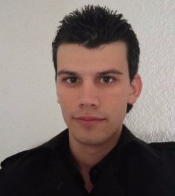
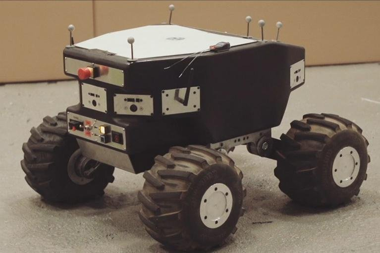

Extracto
Soy una persona muy trabajadora que siempre intenta superarse y aprender nuevas cosas. El límite de cada uno es el que se marque, y como muchas veces digo, ya descansaré cuando este muerto
Experiencia
Profesor particular de programación
enero de 2017 - Present
- Java, Python, Ruby, Haskell, C++, Pascal
Programador de aplicaciones Web
Cuerpo Nacional de Policia
septiembre de 2016 - noviembre de 2016 (3 meses)
- Programación de aplicaciones web internas
- Java, Javascript, HTML, CSS
Programador en On Board Systems, robótica terrestre
IXION Industry & Aerospace, S.L
marzo de 2016 - agosto de 2016 (6 meses)
- Desarrollo software
- Validación y verificación de software
- Integración de sistemas
- Java, C, C++, Wiki, Jenkins

Técnico informático
Universidad Rey Juan Carlos
abril de 2014 - julio de 2015 (1 año 4 meses)
Soporte informático a los ordenadores de la Universidad Rey Juan Carlos
Técnico informático
Universidad Rey Juan Carlos
2015 (1 año)
- Soporte informático durante la realización de los exámenes de medicina.
Representante en AULA 2015
Universidad Rey Juan Carlos
2015 (1 año)
Representante en AULA 2012
Universidad Rey Juan Carlos
2012 (1 año)
Educación
Master Universitario en Ingeniería Informática
Universidad Rey Juan Carlos
2017 - 2018
Grado en Ingeniería de Computadores
Universidad Rey Juan Carlos
2010 - 2017
Actividades y grupos:
- Delegado de clase: 2012-2013, 2013-2014, 2014-2015.
- Delegado de Titulación: 2012-2013, 2016-2017
- Vocal de Titulación: 2013-2014, 2014-2015.
- Miembro de la Junta de Alumnos y miembro de la Junta de Escuela Técnica Superior de Ingeniería Informática, 2011-2017.
- Miembro del comité de calidad de Titulación, 2011-2015.
- Becario en la Unidad de Servicios Informáticos, Abril (2014)-Julio (2015), campus de Alcorcón.
- Representación de la URJC en la feria de AULA en IFEMA Madrid: 2012, 2015.
- Miembro de la asociación de estudiantes Unión de Alumnos del Campus de Móstoles (UACM).
- Colaborador, Technology Fest: 2012-2014.
- Organizador, Technology Fest: 2017.
- Organizador, festividad de San Silicio: 2012-2015.
- Colaborador, FesTICval: 2013-2015.
- 4ESO-Empresa: 2017.
- Visitas guiadas a centros escolares: 2011-2014.
- Realización de torneos de cartas y torneos de videojuegos en diversas ocasiones.
Grado en Ingeniería Informática
Universidad Rey Juan Carlos
2010 - 2017
LE-1: Linux Essentials
Linux Professional Institute
MOOC Ciberseguridad
URJC online
2015 - 2016
Bachillerato Tecnologico
I.E.S. Gran Capitán
2007 - 2010
Monitor de tiempo libre y juegos
SHEMA Escuela de Tiempo Libre
2006 - 2008
Educación Secundaria Obligatoria
Colegio Liceo Ibérico
2003 - 2007
Educación Primaria obligatoria
Colegio Liceo Ibérico
2000 - 2003
Conocimientos Informáticos
LENGUAJES INFORMÁTICOS PREDOMINANTES
- Java
- Ruby
- Pascal
- C
- C++
CONOCIMIENTOS DE LENGUAJES INFORMÁTICOS
- Python
- Processing
- Haskell
- HTML
- CSS
- JavaScript
- C#
- Basic
- Visual Basic
- VHDL
- Ensamblador
- SQL
- Android
- Swift
- MATLAB
IDE
- Eclipse
- NetBeans
- QT Creator
- Eclipse Spring Tool Suite
- Sublime
- Notepad++
MAS CONOCIMIENTOS
- Wiki
- Jenkins
- GitHub
FORMACIÓN COMPLEMENTARIA ORIENTADA A LA INFORMÁTICA
Cursos
- CSU Linux Essentials - Universidad Rey Juan Carlos 2016.
- CSU Oracle Certified Professional Java Programmer I - Universidad Rey Juan Carlos 2017.
- CSU en Desarrollo de web con Java, Spring y MongoDB - Universidad Rey Juan Carlos 2016.
- CSU en Robótica - Universidad Rey Juan Carlos 2016.
- Python - Codecademy 21/07/2015.
- Ruby - Codecademy 09/04/2015.
- C# Tutorial - Sololearn 29/07/2016.
- C++ Tutorial - Sololearn 13/05/2015.
- Java Tutorial - Sololearn 24/07/2015.
- JavaScript Tutorial - Sololearn 03/08/2015.
- CSS Fundamentals – Sololearn 13/7/2016.
- HTML Fundamentals - Sololearn 26/07/2015.
- SQL Fundamentals - Sololearn 27/07/2015.
- Try Ruby - Code School 04/2015.
- Rails for Zombies Redux - Code School 04/2015.
- Breaking the ice with regular expressions - Code School 07/2015.
- Android: Programación de Aplicaciones - Miriada X , Universitat Politècnica de València 24/04/2013.
- Gestión de la Información Cientifica en Abierto - Miriada X , Universidad Complutense de Madrid.
- Competencias Transversales del emprendedor - Miriada X , UNED 23/04/2013.
- Buscar en Internet - Miriada X , Universitat Politècnica de València 12/04/2013.
- Software libre y conocimiento en abierto - Miriada X , Universidad Politécnica de Madrid / Universidad de Zaragoza 11/04/2013.
- Derecho y Redes Sociales – Miriada X, Universidad Europea de Madrid 17/03/2014.
- Diseño, Organización y Evaluación de videojuegos y gamificación – Miriada X, Universidad Europea de Madrid 17/02/2014.
- Introducción a la Programación para Ciencias e Ingeniería – Miriada X, Universidad Politécnica de Madrid.
TRABAJO DE INVESTIGACIÓN A DESTACAR
- Maleta GPS en Arduino para una asignatura de la Universidad Rey Juan Carlos. Maleta que solo se puede realizar su apertura en unas coordenadas terrestres específicas.
- Supervisor en Arduino para una empresa de seguridad. Aparato electrónico utilizado para el control de los empleados. Dispone de botón de emergencia, botón de fichar, aviso de manipulación del aparato y desconexión de corriente, todo asociado a un dispositivo móvil.